Apache NetBeans
Apache NetBeansLatest release
NetBeans Server-Skeleton Module Tutorial
| This tutorial needs a review. You can edit it in GitHub following these contribution guidelines. |
This tutorial is intended to ease the initial phase of developing NetBeans modules that provide support for web deployment servers, such as the Tomcat Web Server or the Sun Java System Application Server. It provides the code for a skeleton server module, together with a detailed procedure for creating it from scratch and a full description of each of its parts. Since this is "just" a skeleton module, server-specific features that relate to starting and stopping, deploying, undeploying, and property customization are not covered here. However, after you create and install the skeleton server module, you will have enough functionality to be able to register a new deployment server in the Server Manager and assign it to an application via the New Project wizard and the Project Properties dialog box. And, you will have a working framework on top of which you can build your own server module for the NetBeans IDE. At the end of the tutorial, you will be pointed to comparable deployment servers in NetBeans CVS, which you can explore to see how server-specific features are implemented elsewhere.
The following topics are covered below:
Once the software is installed, this tutorial can be completed in 60 minutes.
For more information on working with NetBeans modules, see the NetBeans Module and Rich-Client Application tutorials page on the NetBeans website. If you have questions, visit the NetBeans Developer FAQ or use the feedback link at the top of this page.
Getting to Know the Sample
Before you start writing the module, you have to make sure you have all of the necessary software. In addition, you might want to play with the sample before building it yourself. Getting to know the sample lets you know what you are in for during the rest of this tutorial!
Installing the Software
Before you begin, you need to install the following software on your computer:
Installing the Sample
Take the following steps to install the sample:
-
Unzip the attached file.
-
In the IDE, choose File > Open Project and browse to the folder that contains the unzipped file. Open the module project. It should look as follows:
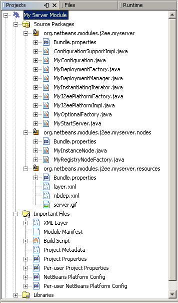
-
In the Projects window, right-click the "My Server Module" project node and choose Install/Reload in Target Platform. The target instance of the IDE opens and the module is installed. Alternatively, if you want to install the module in the current instance of the IDE, choose Install/Reload in Development IDE instead.
Introducing the Sample
-
Choose Tools > Server Manager, click Add Server and notice that a new server is available:
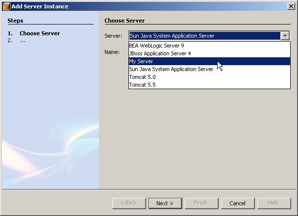
-
Select "My Server" and type a name, such as "Test Server", in the Name textfield:
-
Click Next. The basis of an installation form implementation is displayed:
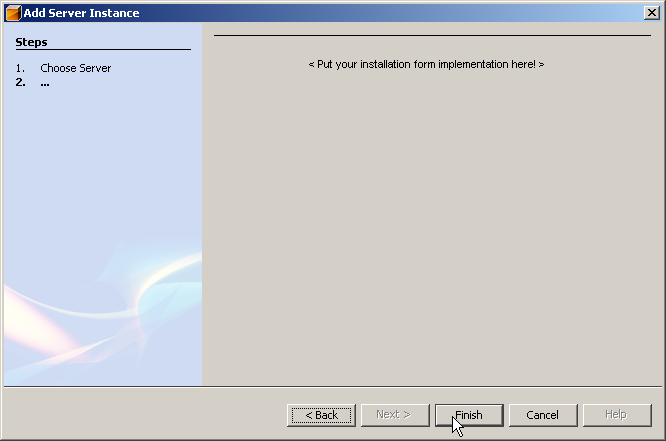
See MyInstantiatingIterator.java for related code details.
-
Click Finish. A new node appears in the Servers list and the basis of a customizer implementation is displayed in the main part of the panel:
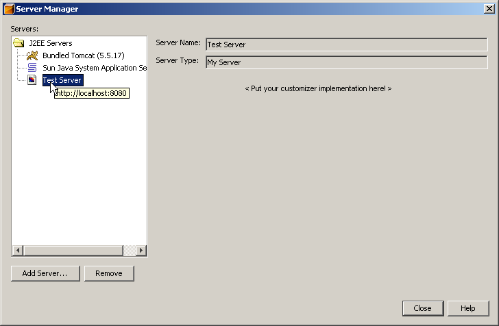
See MyInstanceNode.java for related code details.
-
Click Close. Open the Runtime window (Ctrl-5) and notice the new "Test Server" node under the Servers node. When you right-click the node, the basis of your menu implementation is displayed:
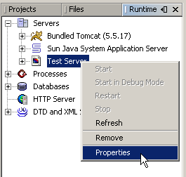
Even though the skeleton server cannot be started, you can assign it as a target server to an application, as shown in the next step.
-
Assign the server as an application’s target server, either while creating the web application or afterwards, while customizing it:
-
Choose File > New Project (Ctrl-Shift-N). Under Categories, select Web and under Projects select Web Application. Click Next. In the Name and Location panel, notice that the Server drop-down includes the new server instance:
-
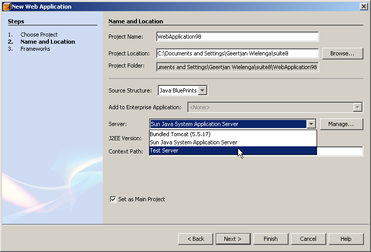
-
Right-click an existing web application and choose Properties. The Project Properties dialog box opens. In the Run panel, notice that the Server drop-down includes the new server type:
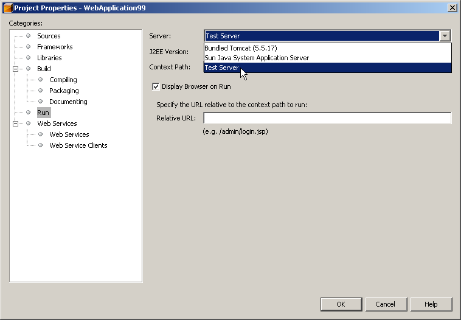
Now that you know exactly what functionality the skeleton server provides, let’s look at the sources!
Introducing the Sources
The sample consists of factory classes, implementation classes, and supporting files.
Below, each are introduced in turn:
-
Factory Classes. The module uses the Factory pattern to instantiate the implementation classes. The module’s factories are highlighted in the illustration below:
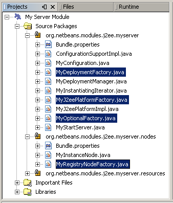
The factories are introduced in alphabetical order:
| File | Description |
|---|---|
An implementation of the |
|
An implementation of the |
|
An implementation of the |
|
An implementation of the |
* Implementation Classes. The implementation classes are instantiated by the factories. The module’s implementation classes are highlighted in the illustration below:

The implementation classes are introduced in alphabetical order:
| File | Description |
|---|---|
An implementation of the NetBeans API’s ConfigurationSupport interface. This class is the NetBeans extension of the DeploymentConfiguration interface, which is a J2EE API class and therefore could not be changed. This extension adds life cycle management and additional module change notifications support. |
|
An implementation of the DeploymentConfiguration interface. The purpose of this class is to provide support for server-specific configuration, in other words, it relates to deployment descriptors. |
|
A dummy implementation of the |
|
Creates a wizard for the registration of new server type instances in the IDE. The current implementation lets the user specify the Display Name only; other properties are hardcoded in order to keep the implementation as simple as possible. |
|
An implementation of |
|
An implementation of the |
|
Represents the new server in the Runtime window. The |
* Supporting Resources. The module’s supporting resources are highlighted in the illustration below:

The supporting resources in the Java packages are introduced in alphabetical order below:
| File | Description |
|---|---|
This is a standard Java properties file, which uses the syntax |
|
Registers the new server type in the NetBeans filesystem. |
|
Specifies the icon to be used in the Runtime window, the URL for obtaining the disconnected |
|
Icon for the new server type’s node in the IDE. |
For basic information each of the Important Files, see the Introduction to NetBeans Module Development.
We have now looked at the features provided by the server skeleton and at each of the files that you need to create it from scratch. Let’s now go through the whole process from start to finish, during which we will recreate the whole server skeleton. At the end, we will look at further resources worth exploring when building your own server implementation on top of the server skeleton.
Setting Up the module Project
The first step in creating a server module is setting up your project in the IDE. The IDE provides a wizard that sets up the source structure and all the basic files needed when you start creating a module.
Creating the Module Project
-
Choose File > New Project. Under Categories, select NetBeans Plug-in Modules. Under Projects, select Module Project. Click Next.
-
In the Name and Location panel, type
My Server Modulein Project Name. Change the Project Location to any directory on your computer, such asc:\mymodules. Leave the Standalone Module radiobutton selected. If not selected, select the Set as Main Project checkbox. Click Next.
-
In the Basic Module Configuration panel, replace
org.yourorghere.myservermodulein Code Name Base withorg.netbeans.modules.j2ee.myservermodule. LeaveMy Server Moduleas the Module Display Name. Change the location of the localizing bundle and XML layer, so that they will be stored in a package with the nameorg.netbeans.modules.j2ee.myserver.resources. Click Finish.
The IDE creates the My Server Module project. The project contains all of your sources and project metadata, such as the project’s Ant build script. The project opens in the IDE. You can view its logical structure in the Projects window (Ctrl-1) and its file structure in the Files window (Ctrl-2). For example, the Projects window should now look as follows:
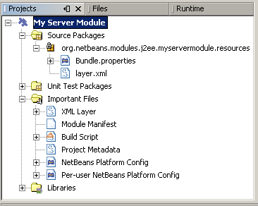
For basic information on each of the files created by the New Project wizard, see the Introduction to NetBeans Module Development.
Specifying the Module’s Dependencies
You will need to subclass several classes that belong to NetBeans APIs. Each has to be declared as a module dependency. Use the Project Properties dialog box for this purpose, as shown below.
-
In the Projects window, right-click the
My Server Moduleproject and choose Properties. In the Project Properties dialog box, click Libraries.
-
For each of the APIs displayed in the list below, click "Add…" in the Libraries panel, select the name from the Module list, and then click OK to confirm it:
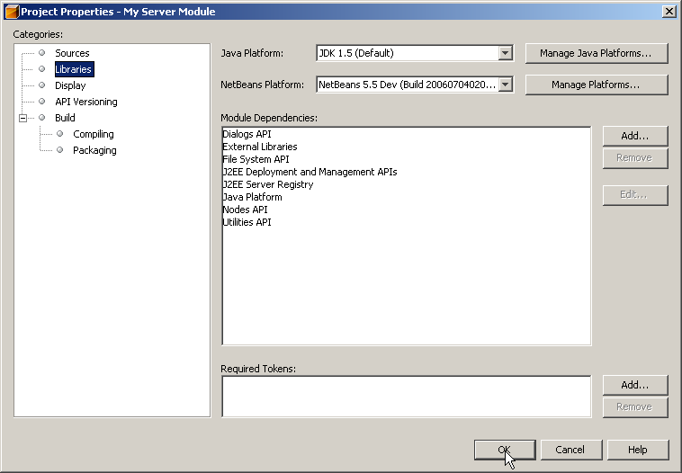
-
Click OK to exit the Project Properties dialog box.
-
In the Projects window, double-click Project Metadata and note that the APIs you selected have been declared as module dependencies.
Creating the Factory Classes
The implementation classes are implemented by the factories. In this section, you will create and examine each of them:
MyDeploymentFactory.java
The MyDeploymentFactory class is an implementation of DeploymentFactory , which produces instances of the MyDeploymentManager implementation class.
The following are the interesting methods in this class:
-
handlesURI().Determines whether the givenMyDeploymentFactorycan handle the specifed URI. -
getDeploymentManager().Creates aconnectedDeploymentManagerinstance. This instance provides access to J2EE resources. -
getDisconnectedDeploymentManager().Creates adisconnectedDeploymentManagerinstance. This instance provides access to configuration support.
Our new server instance will use the deployer:myserver prefix so that the URL used to obtain a connected deployment manager looks like this: deployer:myserver:localhost:8080 .
Do the following to create the MyDeploymentFactory class:
-
Right-click the
org.netbeans.modules.j2ee.myservernode and choose New > File/Folder. Under Categories, choose Java Classes. Under File Types, choose Java Class. Click Next and typeMyDeploymentFactoryin Class Name. Click Finish. The new Java class opens in the Source Editor.
-
Replace the default code with the code below:
package org.netbeans.modules.j2ee.myserver;
import javax.enterprise.deploy.shared.factories.DeploymentFactoryManager;
import javax.enterprise.deploy.spi.DeploymentManager;
import javax.enterprise.deploy.spi.exceptions.DeploymentManagerCreationException;
import javax.enterprise.deploy.spi.factories.DeploymentFactory;
import org.openide.ErrorManager;
import org.openide.util.NbBundle;
public class MyDeploymentFactory implements DeploymentFactory {
public static final String URI_PREFIX = "deployer:myserver"; // NOI18N
private static DeploymentFactory instance;
public static synchronized DeploymentFactory create() {
if (instance == null) {
instance = new MyDeploymentFactory();
DeploymentFactoryManager.getInstance().registerDeploymentFactory(instance);
}
return instance;
}
public boolean handlesURI(String uri) {
return uri != null && uri.startsWith(URI_PREFIX);
}
public DeploymentManager getDeploymentManager(String uri, String uname, String passwd) throws DeploymentManagerCreationException {
if (!handlesURI(uri)) {
throw new DeploymentManagerCreationException("Invalid URI:" + uri); // NOI18N
}
return new MyDeploymentManager();
}
public DeploymentManager getDisconnectedDeploymentManager(String uri) throws DeploymentManagerCreationException {
if (!handlesURI(uri)) {
throw new DeploymentManagerCreationException("Invalid URI:" + uri); // NOI18N
}
return new MyDeploymentManager();
}
public String getProductVersion() {
return "0.1"; // NOI18N
}
public String getDisplayName() {
return NbBundle.getMessage(MyDeploymentFactory.class, "TXT_DisplayName"); // NOI18N
}
}MyJ2eePlatformFactory.java
The MyJ2eePlatformFactory class is an implementation of the J2eePlatformFactory class. The implementation is very simple — it produces instances of the MyJ2eePlatformImpl class.
Do the following to create the MyJ2eePlatformFactory class:
-
Right-click the
org.netbeans.modules.j2ee.myservernode, choose New > Java Class, and typeMyJ2eePlatformFactoryin Class Name. Click Finish. The new Java class opens in the Source Editor.
-
Replace the default code with the code below:
package org.netbeans.modules.j2ee.myserver;
import javax.enterprise.deploy.spi.DeploymentManager;
import org.netbeans.modules.j2ee.deployment.plugins.api.J2eePlatformFactory;
import org.netbeans.modules.j2ee.deployment.plugins.api.J2eePlatformImpl;
public class MyJ2eePlatformFactory extends J2eePlatformFactory {
public J2eePlatformImpl getJ2eePlatformImpl(DeploymentManager dm) {
return new MyJ2eePlatformImpl();
}
}MyOptionalFactory.java
The MyOptionalFactory class is an implementation of OptionalDeploymentManagerFactory . Despite its name, this factory class is not optional. At least two methods need to be implemented:
-
getStartServer().Starts and stops the server. -
getAddInstanceIterator().Creates the wizard for registering the server in the IDE.
The other two methods are not implemented here:
-
getIncrementalDeployment().CreatesIncrementalDeployment, which offers an alternative way, which is more convenient for development.. -
getFindJSPServlet().CreatesFindJSPServlet, which lets modules specify the location of servlets generated for JSPs.
Do the following to create the MyOptionalFactory class:
-
Right-click the
org.netbeans.modules.j2ee.myservernode, choose New > Java Class, and typeMyOptionalFactoryin Class Name. Click Finish. The new Java class opens in the Source Editor.
-
Replace the default code with the code below:
package org.netbeans.modules.j2ee.myserver;
import javax.enterprise.deploy.spi.DeploymentManager;
import org.netbeans.modules.j2ee.deployment.plugins.api.FindJSPServlet;
import org.netbeans.modules.j2ee.deployment.plugins.api.IncrementalDeployment;
import org.netbeans.modules.j2ee.deployment.plugins.api.OptionalDeploymentManagerFactory;
import org.netbeans.modules.j2ee.deployment.plugins.api.StartServer;
import org.openide.WizardDescriptor.InstantiatingIterator;
public class MyOptionalFactory extends OptionalDeploymentManagerFactory {
public StartServer getStartServer(DeploymentManager dm) {
return new MyStartServer();
}
public IncrementalDeployment getIncrementalDeployment(DeploymentManager dm) {
return null;
}
public FindJSPServlet getFindJSPServlet(DeploymentManager dm) {
return null;
}
public InstantiatingIterator getAddInstanceIterator() {
return new MyInstantiatingIterator();
}
}MyRegistryNodeFactory.java
The MyRegistryNodeFactory class is an implementation of RegistryNodeFactory . The purpose of this factory is to produce server and target nodes, which are used as user interface representations in the Runtime window. Since the new server type only has one target and its Admin Server is therefore also a target server, you do not need to implement the target node.
-
Right-click the
org.netbeans.modules.j2ee.myservernode, choose New > Java Class, and typeMyRegistryNodeFactoryin Class Name. Click Finish. The new Java class opens in the Source Editor.
-
Replace the default code with the code below:
package org.netbeans.modules.j2ee.myserver.nodes;
import org.netbeans.modules.j2ee.deployment.plugins.api.RegistryNodeFactory;
import org.openide.nodes.Children;
import org.openide.nodes.Node;
import org.openide.util.Lookup;
public class MyRegistryNodeFactory implements RegistryNodeFactory {
public Node getTargetNode(Lookup lookup) {
return null;
}
public Node getManagerNode(Lookup lookup) {
return new MyInstanceNode(lookup);
}
}Creating the Implementation Classes
The implementation classes are implemented by the factories. In this section, you will create and examine each of them:
ConfigurationSupportImpl.java
An implementation of the NetBeans API’s ConfigurationSupport interface. This class is the NetBeans extension of the DeploymentConfiguration interface, which is a J2EE API class and therefore could not be changed. This extension adds life cycle management and additional module change notifications support.
-
Right-click the
org.netbeans.modules.j2ee.myservernode, choose New > Java Class, and typeConfigurationSupportImplin Class Name. Click Finish. The new Java class opens in the Source Editor.
-
Replace the default code with the code below:
package org.netbeans.modules.j2ee.myserver;
import java.io.File;
import javax.enterprise.deploy.model.DDBean;
import javax.enterprise.deploy.model.DeployableObject;
import javax.enterprise.deploy.spi.DeploymentConfiguration;
import javax.enterprise.deploy.spi.exceptions.ConfigurationException;
import org.netbeans.modules.j2ee.deployment.common.api.OriginalCMPMapping;
import org.netbeans.modules.j2ee.deployment.plugins.api.ConfigurationSupport;
public class ConfigurationSupportImpl extends ConfigurationSupport {
public void setMappingInfo(DeploymentConfiguration config, OriginalCMPMapping[] mappings) {
}
public void ensureResourceDefined(DeploymentConfiguration config, DDBean bean) {
}
public String getWebContextRoot(DeploymentConfiguration config, DeployableObject deplObj)
throws ConfigurationException {
return ((MyConfiguration)config).getContextPath();
}
public void setWebContextRoot(DeploymentConfiguration config, DeployableObject deplObj, String contextRoot)
throws ConfigurationException {
((MyConfiguration)config).setContextPath(contextRoot);
}
public void initConfiguration(DeploymentConfiguration config, File[] files,
File resourceDir, boolean keepUpdated) throws ConfigurationException {
((MyConfiguration)config).init(files[0]);
}
public void disposeConfiguration(DeploymentConfiguration config) {
}
public void updateResourceDir(DeploymentConfiguration config, File resourceDir) {
}
}MyConfiguration.java
An implementation of the DeploymentConfiguration interface. The purpose of this class is to provide support for server-specific configuration, in other words, it relates to deployment descriptors.
The previous versions of the j2eeserver API required plug-ins to use the DConfigBean based model for s erver specific-deployment descriptor representations; this is not needed anymore. Plug-ins are now allowed to use any model representation they want, typically a schema2beans-based model, a nd are also in charge of saving and loading the deployment configuration. Because of the redesign, the following DeploymentConfiguration methods are no longer used: getDConfigBeanRoot() , removeDConfigBean() , restore() , restoreDConfigBean() , and saveDConfigBean() . On the other hand, new methods were added through the ConfigurationSupport interface.
|
-
Right-click the
org.netbeans.modules.j2ee.myservernode, choose New > Java Class, and typeMyConfigurationin Class Name. Click Finish. The new Java class opens in the Source Editor.
-
Replace the default code with the code below:
package org.netbeans.modules.j2ee.myserver;
import java.io.File;
import java.io.IOException;
import java.io.InputStream;
import java.io.OutputStream;
import java.io.OutputStreamWriter;
import java.io.PrintWriter;
import javax.enterprise.deploy.model.DDBean;
import javax.enterprise.deploy.model.DDBeanRoot;
import javax.enterprise.deploy.model.DeployableObject;
import javax.enterprise.deploy.model.XpathEvent;
import javax.enterprise.deploy.model.XpathListener;
import javax.enterprise.deploy.spi.DConfigBeanRoot;
import javax.enterprise.deploy.spi.DeploymentConfiguration;
import javax.enterprise.deploy.spi.exceptions.BeanNotFoundException;
import javax.enterprise.deploy.spi.exceptions.ConfigurationException;
import org.openide.ErrorManager;
import org.openide.filesystems.FileLock;
import org.openide.filesystems.FileObject;
import org.openide.filesystems.FileUtil;
public class MyConfiguration implements DeploymentConfiguration, XpathListener {
private DeployableObject deplObj;
public MyConfiguration (DeployableObject deplObj) {
this.deplObj = deplObj;
}
public void init(File file) {
try {
FileObject folder = FileUtil.toFileObject(file.getParentFile());
if (folder == null) {
ErrorManager.getDefault().log(ErrorManager.INFORMATIONAL, "The parent folder does not exist!"); // NOI18N
return;
}
PrintWriter pw = null;
FileLock lock = null;
try {
String name = file.getName();
FileObject fo = folder.getFileObject(name);
if (fo == null) {
fo = folder.createData(name);
}
lock = fo.lock();
pw = new PrintWriter(new OutputStreamWriter(fo.getOutputStream(lock)));
pw.println("<MyServer path=\"/mypath\"/>"); // NOI18N
} finally {
if (pw != null) {
pw.close();
}
if (lock != null) {
lock.releaseLock();
}
}
} catch (IOException ex) {
ErrorManager.getDefault().notify(ErrorManager.INFORMATIONAL, ex);
}
// web.xml represented as DDBean model
DDBeanRoot root = deplObj.getDDBeanRoot();
if (root != null) {
// here we will listen to resource reference changes
root.addXpathListener("/web-app/resource-ref", this); // NOI18N
}
}
public String getContextPath() throws ConfigurationException {
// TODO: replace this with reading the context path from the server specific DD
return "/mypath";
}
public void setContextPath(String contextPath) throws ConfigurationException {
// TODO: here put the code that will store the context path in the server specific DD
}
// XpathListener implementation -------------------------------------------
public void fireXpathEvent(XpathEvent xpe) {
DDBean eventDDBean = xpe.getBean();
if ("/web-app/resource-ref".equals(eventDDBean.getXpath())) { // NIO18N
// new resource reference added
if (xpe.isAddEvent()) {
String[] name = eventDDBean.getText("res-ref-name"); // NOI18N
String[] type = eventDDBean.getText("res-type"); // NOI18N
String[] auth = eventDDBean.getText("res-auth"); // NOI18N
// TODO: take appropriate steps here
}
}
}
// JSR-88 methods ---------------------------------------------------------
public DeployableObject getDeployableObject () {
return deplObj;
}
public void save(OutputStream os) throws ConfigurationException {
}
public DConfigBeanRoot getDConfigBeanRoot (DDBeanRoot dDBeanRoot)
throws ConfigurationException {
return null;
}
public void removeDConfigBean (DConfigBeanRoot dConfigBeanRoot)
throws BeanNotFoundException {
}
public void restore (InputStream is)
throws ConfigurationException {
}
public DConfigBeanRoot restoreDConfigBean (InputStream is, DDBeanRoot dDBeanRoot)
throws ConfigurationException {
return null;
}
public void saveDConfigBean (OutputStream os, DConfigBeanRoot dConfigBeanRoot)
throws ConfigurationException {
}
}MyDeploymentManager.java
A dummy implementation of the DeploymentManager interface, which does nothing more than return MyConfiguration.java . It is up to you to provide other server-specific implementation features.
-
Right-click the
org.netbeans.modules.j2ee.myservernode and choose New > File/Folder. Under Categories, choose Java Classes. Under File Types, choose Java Class. Click Next and typeMyDeploymentManagerin Class Name. Click Finish. The new Java class opens in the Source Editor.
-
Replace the default code with the code below:
package org.netbeans.modules.j2ee.myserver;
import java.io.File;
import java.io.InputStream;
import javax.enterprise.deploy.model.DeployableObject;
import javax.enterprise.deploy.shared.DConfigBeanVersionType;
import javax.enterprise.deploy.shared.ModuleType;
import javax.enterprise.deploy.spi.DeploymentConfiguration;
import javax.enterprise.deploy.spi.DeploymentManager;
import javax.enterprise.deploy.spi.Target;
import javax.enterprise.deploy.spi.TargetModuleID;
import javax.enterprise.deploy.spi.exceptions.DConfigBeanVersionUnsupportedException;
import javax.enterprise.deploy.spi.exceptions.InvalidModuleException;
import javax.enterprise.deploy.spi.exceptions.TargetException;
import javax.enterprise.deploy.spi.status.ProgressObject;
public class MyDeploymentManager implements DeploymentManager {
public ProgressObject [java-layer-method]#distribute(Target[] target, File file, File file2)
throws IllegalStateException {
return null;
}
public DeploymentConfiguration [java-layer-method]#createConfiguration(DeployableObject deployableObject)
throws InvalidModuleException {
return new <<MyConfiguration, ``MyConfiguration`` >>(deployableObject);
}
public ProgressObject [java-layer-method]#redeploy(TargetModuleID[] targetModuleID, InputStream inputStream, InputStream inputStream2)
throws UnsupportedOperationException, IllegalStateException {
return null;
}
public ProgressObject [java-layer-method]#distribute(Target[] target, InputStream inputStream, InputStream inputStream2)
throws IllegalStateException {
return null;
}
public ProgressObject [java-layer-method]#undeploy(TargetModuleID[] targetModuleID) throws IllegalStateException {
return null;
}
public ProgressObject [java-layer-method]#stop(TargetModuleID[] targetModuleID) throws IllegalStateException {
return null;
}
public ProgressObject [java-layer-method]#start(TargetModuleID[] targetModuleID) throws IllegalStateException {
return null;
}
public void [java-layer-method]#setLocale(java.util.Locale locale) throws UnsupportedOperationException {
}
public boolean [java-layer-method]#isLocaleSupported(java.util.Locale locale) {
return false;
}
public TargetModuleID[] [java-layer-method]#getAvailableModules(ModuleType moduleType, Target[] target)
throws TargetException, IllegalStateException {
return null;
}
public TargetModuleID[] [java-layer-method]#getNonRunningModules(ModuleType moduleType, Target[] target)
throws TargetException, IllegalStateException {
return null;
}
public TargetModuleID[] [java-layer-method]#getRunningModules(ModuleType moduleType, Target[] target)
throws TargetException, IllegalStateException {
return null;
}
public ProgressObject [java-layer-method]#redeploy(TargetModuleID[] targetModuleID, File file, File file2)
throws UnsupportedOperationException, IllegalStateException {
return null;
}
public void [java-layer-method]#setDConfigBeanVersion(DConfigBeanVersionType dConfigBeanVersionType)
throws DConfigBeanVersionUnsupportedException {
}
public boolean [java-layer-method]#isDConfigBeanVersionSupported(DConfigBeanVersionType dConfigBeanVersionType) {
return false;
}
public void [java-layer-method]#release() {
}
public boolean [java-layer-method]#isRedeploySupported() {
return false;
}
public java.util.Locale [java-layer-method]#getCurrentLocale() {
return null;
}
public DConfigBeanVersionType [java-layer-method]#getDConfigBeanVersion() {
return null;
}
public java.util.Locale [java-layer-method]#getDefaultLocale() {
return null;
}
public java.util.Locale[] [java-layer-method]#getSupportedLocales() {
return null;
}
public Target[] [java-layer-method]#getTargets() throws IllegalStateException {
return null;
}
}######################MyInstantiatingIterator.java
The MyInstantiatingIterator class is used to create a wizard for registration of the new server in the IDE. The implementation described below lets you specify the display name only. Here, all the other properties are hard coded to keep the implementation as simple as possible.
Notice the URL variable used in the instantiate() method. It is passed to the InstanceProperties.createInstanceProperties() method, which does the actual server registration. The URL parameter is the same as the one used by the DeploymenManager . This way we ensure that our server controls the newly created server instance.
-
Right-click the
org.netbeans.modules.j2ee.myservernode, choose New > Java Class, and typeMyInstantiatingIteratorin Class Name. Click Finish. The new Java class opens in the Source Editor.
-
Replace the default code with the code below:
package org.netbeans.modules.j2ee.myserver;
import java.awt.Component;
import java.awt.Label;
import java.io.IOException;
import java.util.HashSet;
import java.util.Set;
import javax.swing.JPanel;
import javax.swing.event.ChangeListener;
import org.openide.WizardDescriptor;
import org.openide.WizardDescriptor.Panel;
import org.openide.util.HelpCtx;
import org.netbeans.modules.j2ee.deployment.plugins.api.InstanceProperties;
import org.openide.DialogDisplayer;
import org.openide.ErrorManager;
import org.openide.NotifyDescriptor;
import org.openide.util.NbBundle;
public class MyInstantiatingIterator implements WizardDescriptor.InstantiatingIterator {
private final static String PROP_DISPLAY_NAME = "ServInstWizard_displayName"; // NOI18N
private InstallPanel panel;
private WizardDescriptor wizard;
public void removeChangeListener(ChangeListener l) {
}
public void addChangeListener(ChangeListener l) {
}
public void uninitialize(WizardDescriptor wizard) {
}
public void initialize(WizardDescriptor wizard) {
this.wizard = wizard;
}
public void previousPanel() {
}
public void nextPanel() {
}
public String name() {
return NbBundle.getMessage(MyInstantiatingIterator.class, "MSG_InstallerName");
}
public Set instantiate() throws IOException {
Set result = new HashSet();
String displayName = getDisplayName();
String url = "deployer:myserver:localhost:8080"; // NOI18N
String username = "username"; // NOI18N
String password = "password"; // NOI18N
try {
InstanceProperties ip = InstanceProperties.createInstanceProperties(
url, username, password, displayName);
result.add(ip);
} catch (Exception ex) {
DialogDisplayer.getDefault().notify(new NotifyDescriptor.Message(
NbBundle.getMessage(MyInstantiatingIterator.class, "MSG_CreateFailed", displayName),
NotifyDescriptor.ERROR_MESSAGE));
}
return result;
}
public boolean hasPrevious() {
return false;
}
public boolean hasNext() {
return false;
}
public Panel current() {
if (panel == null) {
panel = new InstallPanel();
}
return panel;
}
private String getDisplayName() {
return (String)wizard.getProperty(PROP_DISPLAY_NAME);
}
private static class InstallPanel implements WizardDescriptor.Panel {
public void removeChangeListener(ChangeListener l) {
}
public void addChangeListener(ChangeListener l) {
}
public void storeSettings(Object settings) {
}
public void readSettings(Object settings) {
}
public boolean isValid() {
return true;
}
public HelpCtx getHelp() {
return HelpCtx.DEFAULT_HELP;
}
public Component getComponent() {
JPanel panel = new JPanel();
panel.add(new Label("< Put your installation form implementation here! >")); // NOI18N
return panel;
}
}
}MyJ2eePlatformImpl.java
The MyJ2eePlatformImpl class is an implementation of J2eePlatformImpl , which is used to describe the target environment that J2EE applications are built against and subsequently deployed to. It provides a set of server libraries, supported module types, and J2EE specification versions.
Note: Since the current implementation of MyJ2eePlatformImpl.java does not provide the J2EE API libraries, your Web or EJB project will not compile, unless you provide those explicitly in the Libraries panel of the Project Properties dialog box.
-
Right-click the
org.netbeans.modules.j2ee.myservernode, choose New > Java Class, and typeMyJ2eePlatformImplin Class Name. Click Finish. The new Java class opens in the Source Editor.
-
Replace the default code with the code below:
package org.netbeans.modules.j2ee.myserver;
import java.io.File;
import java.util.HashSet;
import java.util.Set;
import org.netbeans.api.java.platform.JavaPlatform;
import org.netbeans.api.java.platform.JavaPlatformManager;
import org.netbeans.modules.j2ee.deployment.devmodules.api.J2eeModule;
import org.netbeans.modules.j2ee.deployment.plugins.api.J2eePlatformImpl;
import org.netbeans.spi.project.libraries.LibraryImplementation;
import org.openide.util.NbBundle;
import org.openide.util.Utilities;
public class MyJ2eePlatformImpl extends J2eePlatformImpl {
public boolean isToolSupported(String toolName) {
return false;
}
public File[] getToolClasspathEntries(String toolName) {
return new File[0];
}
public Set getSupportedSpecVersions() {
Set result = new HashSet();
result.add(J2eeModule.J2EE_14);
//result.add(J2eeModule.JAVA_EE_5);
return result;
}
public java.util.Set getSupportedModuleTypes() {
Set result = new HashSet();
result.add(J2eeModule.EAR);
result.add(J2eeModule.WAR);
result.add(J2eeModule.EJB);
return result;
}
public java.io.File[] getPlatformRoots() {
return new File[0];
}
public LibraryImplementation[] getLibraries() {
return new LibraryImplementation[0];
}
public java.awt.Image getIcon() {
return Utilities.loadImage("org/netbeans/modules/j2ee/myserver/resources/server.gif"); // NOI18N
}
public String getDisplayName() {
return NbBundle.getMessage(MyJ2eePlatformImpl.class, "MSG_MyServerPlatform");
}
public Set getSupportedJavaPlatformVersions() {
Set versions = new HashSet();
versions.add("1.4"); // NOI18N
versions.add("1.5"); // NOI18N
return versions;
}
public JavaPlatform getJavaPlatform() {
return JavaPlatformManager.getDefault().getDefaultPlatform();
}
}MyStartServer.java
The MyStartServer class is an implementation of the StartServer interface. Its purpose is to provide ability to start, stop, and determine the state of the server. The current implementation says that the server is always stopped and it cannot be started. The server-specific implementation is left up to you to complete for the server in question.
-
Right-click the
org.netbeans.modules.j2ee.myservernode, choose New > Java Class, and typeMyStartServerin Class Name. Click Finish. The new Java class opens in the Source Editor.
-
Replace the default code with the code below:
package org.netbeans.modules.j2ee.myserver;
import javax.enterprise.deploy.spi.Target;
import javax.enterprise.deploy.spi.status.ProgressObject;
import org.netbeans.modules.j2ee.deployment.plugins.api.ServerDebugInfo;
import org.netbeans.modules.j2ee.deployment.plugins.api.StartServer;
public class MyStartServer extends StartServer {
public ProgressObject [java-layer-method]#startDebugging(Target target) {
return null;
}
public boolean [java-layer-method]#isDebuggable(Target target) {
return false;
}
public boolean [java-layer-method]#isAlsoTargetServer(Target target) {
return true;
}
public ServerDebugInfo [java-layer-method]#getDebugInfo(Target target) {
return null;
}
public boolean [java-layer-method]#supportsStartDeploymentManager() {
return false;
}
public ProgressObject [java-layer-method]#stopDeploymentManager() {
return null;
}
public ProgressObject [java-layer-method]#startDeploymentManager() {
return null;
}
public boolean [java-layer-method]#needsStartForTargetList() {
return false;
}
public boolean [java-layer-method]#needsStartForConfigure() {
return false;
}
public boolean [java-layer-method]#needsStartForAdminConfig() {
return false;
}
public boolean [java-layer-method]#isRunning() {
return false;
}
}###########MyInstanceNode.java
The MyInstanceNode class represents instances of the new server type as a node in the Runtime window. A default set of features is added to the node — these features display the server’s status and provide default menu items such as Start , Refresh , and Remove . This is done by a standard filter node that exists on top of the node provided by the module. The MyInstanceNode class defines a dummy customizer implementation which is displayed in the Tools menu’s Server Manager.
-
Right-click the
org.netbeans.modules.j2ee.myserver.nodesnode, choose New > Java Class, and typeMyInstanceNodein Class Name. Click Finish. The new Java class opens in the Source Editor.
-
Replace the default code with the code below:
package org.netbeans.modules.j2ee.myserver.nodes;
import java.awt.Component;
import java.awt.Label;
import javax.swing.JPanel;
import org.openide.nodes.AbstractNode;
import org.openide.nodes.Children;
import org.openide.nodes.Node;
import org.openide.util.Lookup;
import org.openide.util.NbBundle;
public class MyInstanceNode extends AbstractNode implements Node.Cookie {
private static String ICON_BASE = "org/netbeans/modules/j2ee/myserver/resources/server.gif"; [java-block-comment]#// NOI18N
public MyInstanceNode(Lookup lookup) {
super(new Children.Array());
getCookieSet().add(this);
setIconBaseWithExtension(ICON_BASE);
}
public String getDisplayName() {
return NbBundle.getMessage(MyInstanceNode.class, "TXT_MyInstanceNode");
}
public String getShortDescription() {
return "http://localhost:8080"; // NOI18N
}
public javax.swing.Action[] getActions(boolean context) {
return new javax.swing.Action[]{};
}
public boolean hasCustomizer() {
return true;
}
public Component getCustomizer() {
JPanel panel = new JPanel();
panel.add(new Label("< Put your customizer implementation here! >")); [java-block-comment]#// NOI18N
return panel;
}
}##Setting Up the Supporting Files
Once you have coded the main files, you must register your module in the layer.xml file and in the nbdep.xml file. You must also define labels and texts you want to display to the user, using the Bundle.properties files.
Registering the New Server in the NetBeans Filesystem
-
Add the following entry between the
<filesystem>tags in thelayer.xmlfile:
<folder name="J2EE">
<folder name="DeploymentPlugins">
<folder name="MyServer">
<file name="Descriptor" url="nbdep.xml"/>
<file name="Factory.instance">
<attr name="instanceCreate" methodvalue="org.netbeans.modules.j2ee.myserver.MyDeploymentFactory.create"/>
<attr name="instanceClass" stringvalue="<<MyDeploymentFactory,org.netbeans.modules.j2ee.myserver.MyDeploymentFactory>>"/>
<attr name="instanceOf" stringvalue="javax.enterprise.deploy.spi.factories.DeploymentFactory"/>
</file>
<file name="RegistryNodeFactory.instance">
<attr name="instanceClass" stringvalue="<<MyRegistryNodeFactory,org.netbeans.modules.j2ee.myserver.nodes.MyRegistryNodeFactory>>"/>
<attr name="instanceOf" stringvalue="org.netbeans.modules.j2ee.deployment.plugins.api.RegistryNodeFactory"/>
</file>
<file name="J2eePlatformFactory.instance">
<attr name="instanceCreate" newvalue="org.netbeans.modules.j2ee.myserver.MyJ2eePlatformFactory"/>
<attr name="instanceClass" stringvalue="<<MyJ2eePlatformFactory,org.netbeans.modules.j2ee.myserver.MyJ2eePlatformFactory>>"/>
<attr name="instanceOf" stringvalue="org.netbeans.modules.j2ee.deployment.plugins.api.J2eePlatformFactory"/>
</file>
<file name="OptionalFactory.instance">
<attr name="instanceCreate" newvalue="org.netbeans.modules.j2ee.myserver.MyOptionalFactory"/>
<attr name="instanceClass" stringvalue="<<MyOptionalFactory,org.netbeans.modules.j2ee.myserver.MyOptionalFactory>>"/>
<attr name="instanceOf" stringvalue="org.netbeans.modules.j2ee.deployment.plugins.api.OptionalDeploymentManagerFactory"/>
</file>
<file name="ConfigurationSupportImpl.instance">
<attr name="instanceCreate" newvalue="<<ConfigurationSupportImpl,org.netbeans.modules.j2ee.myserver.ConfigurationSupportImpl>>"/>
<attr name="instanceOf" stringvalue="org.netbeans.modules.j2ee.deployment.plugins.api.ConfigurationSupport"/>
</file>
<folder name="DeploymentFileNames">
<folder name="WAR">
<file name="WEB-INF\myserver-web.xml"/>
</folder>
</folder>
</folder>
</folder>
</folder>-
Right-click
org.netbeans.modules.j2ee.myserver.resourcesand choose New > File/Folder. Under categories, select XML. Under File Types, select XML Document. Click Next. Typenbdepin File Name, click Next and then click Finish. Replace the content ofnbdep.xmlwith the following code:
<netbeans-deployment>
<!--
The icon element contains a path to the icon to be used to present the server
in the server registry.
-->
<icon>org/netbeans/modules/j2ee/myserver/resources/server</icon>
<!--
The disconnected-string element contains the String parameter to DeploymentFactory.getDisconnectedDeploymentManager()
-->
<disconnected-string>deployer:myserver</disconnected-string>
<!--
The container-limitation element modifies a plugin to say that not all j2ee deployments are valid.
For example, a web-only server would include
<container-limitation> <war-deploy/> </container-limitation>
to indicate that only war deployments are accepted.
If a container-limitation element is not present, all j2ee deployments are assumed valid.
If a container-limitation element is present, then only j2ee deployment types explicitly
mentioned are allowed.
-->
<container-limitation>
<ear-deploy/>
<war-deploy/>
<ejbjar-deploy/>
</container-limitation>
<web-context-root>
<xpath>/</xpath>
<prop-name>contextRoot</prop-name>
</web-context-root>
</netbeans-deployment>Localizing the module
The module is localized using Bundle.properties files. A Bundle.properties file provides language-specific strings for the user interface provided by other files in the package. When you used the New Project wizard to create the module, the IDE created a Bundle.properties file in the org.netbeans.modules.j2ee.myserver.resources package. Now you will add key=value pairs to the IDE-generated Bundle.properties file and create two additional Bundle.properties files for the other packages.
-
In
org.netbeans.modules.j2ee.myserver.resources, add the following properties to theBundle.propertiesfile:
OpenIDE-Module-Name=My Server Module
OpenIDE-Module-Display-Category=J2EE
OpenIDE-Module-Short-Description=My Server Module
OpenIDE-Module-Long-Description=My Server Module-
Right-click
org.netbeans.modules.j2ee.myserverand choose New > File/Folder. Under Categories, select Other. Under File Types, select Properties File. Click Next. TypeBundlein File Name and then click Finish. Add the following properties to theBundle.propertiesfile:
TXT_DisplayName=My Server
MSG_InstallerName=My Server Installer
MSG_CreateFailed=Cannot create {0} server instance.
MSG_MyServerPlatform=My Server Platform-
Create another
Bundle.propertiesfile in theorg.netbeans.modules.j2ee.myserver.nodespackage, and add the following properties to it:
TXT_MyInstanceNode=My Server Instance
TXT_MyTargetNode=My Target InstanceGetting the Icon
Make sure that you have a 16x16 icon named server.gif in the org.netbeans.modules.j2ee.myserver.resources package. For example, you can find some 16x16 icons at the following location within the IDE’s installation directory:
enterprise3\jakarta-tomcat-5.5.17\server\webapps\admin\imagesBuilding and Installing the Module
The IDE uses an Ant build script to build and install your module. The build script is created for you when you create the module project.
Installing the Server-Skeleton Module
-
In the Projects window, right-click the
My Server Moduleproject and choose Install/Reload in Target Platform.
The module is built and installed in the target IDE or Platform. The target IDE or Platform opens so that you can try out your new module. The default target IDE or Platform is the installation used by the current instance of the development IDE. Note that when you run your module, you will be using a temporary test user directory, not the development IDE’s user directory.
Using the Server-Skeleton Module
-
Choose Tools > Server Manager, click Add Server and notice that a new server is available:
-
Use the module as described in Introducing the Sample.
Adding Server-Specific Code
Before adding server-specific code, have a look at how others have done it.
-
Download the open-source server modules for JBoss, WebLogic, and WebSphere, following the instructions found on the Server Plugins Project page.
-
Open the sources of one or more of the downloaded server modules in the IDE and browse through them. For example, if you open the sources of the JBoss module, the Projects window looks as follows:
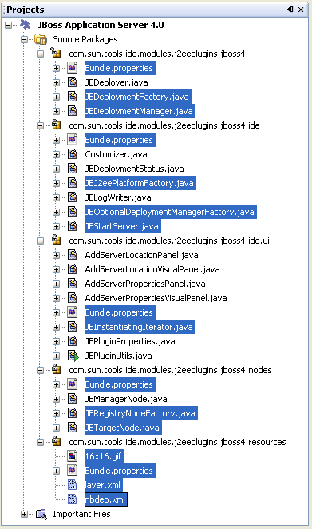
Note that in the illustration above, the selected files are those that are discussed in this tutorial.
-
Examine the sources, using this tutorial and the NetBeans API List (Current Development Version) to help you.
Here are some j2eeserver API classes worth looking at:
-
IncrementalDeployment. This interface allows modules to use incremental deployment instead of the standard JSR-88 deployment.
-
UISupport. This class provides support for showing the server output in the Output window along with the toolbar with the server state management actions.
-
Create your own server module!
Next Steps
For more information about creating and developing NetBeans modules, see the following resources:
Versioning and Known Issues in this Tutorial
| Version | Date | Changes |
|---|---|---|
1 |
25 June 2005 |
Initial version |
2 |
4 July 2006 |
Updated for NetBeans IDE 5.5, using diff from Stepan Herold. Also: changed the download to the new module, changed all screenshots, changed instances of "plugin" and "plug-in", where relevant to "module", cleaned up a lot. Following files are new or have undergone change for 5.5: * New: ConfigurationSupportImpl.java and MyConfiguration.java * Deleted: DeploymentPlanSplitter.java * Changed: MyDeploymentManager.java, MyJ2eePlatformImpl.java, MyInstanceNode.java, layer.xml, project.xml |
3 |
10 August 2006 |
* Changed forward slash to backward slash in |
| Issue Number | Description | Status |
|---|---|---|
1 |
Code and tutorial itself need to be reviewed. Code needs to be tested on multiple platforms. (Created on Windows XP, tested nowhere else yet. Tried to avoid potential problems by avoiding spaces in names, etc.) |
Done. |
2 |
Tutorial needs to be updated once Phase III and IV are complete. |
Done. |
3 |
Some APIs used in this tutorial have deprecated methods. This will produce errors in the Output window, but should not impact functioning of module. |
Fixed. |
4 |
JSR 88 is helpful in understanding this module. However, this JSR not yet been referred to in this tutorial. |
To be fixed. |
5 |
Javadoc links not yet provided for all classes and methods used in this module, although most have been done already. |
To be fixed. |
6 |
Open questions, specific to version 2 of this tutorial: * How to make the server skeleton support Java EE 5? (Annotations, no deployment descriptors?) * Previous version was possible to select Start/Stop/etc. Why not anymore? * Migration path? * Why no more deploymentplansplitter? * Why now deployment descriptor goes to WEB-INF instead of META-INF? * Why has DeploymentFileNames in layer.xml moved? * Picture of JBoss at end to be changed too (does it use MyConfiguration.java, etc? |
To be answered. |

{kind=link}